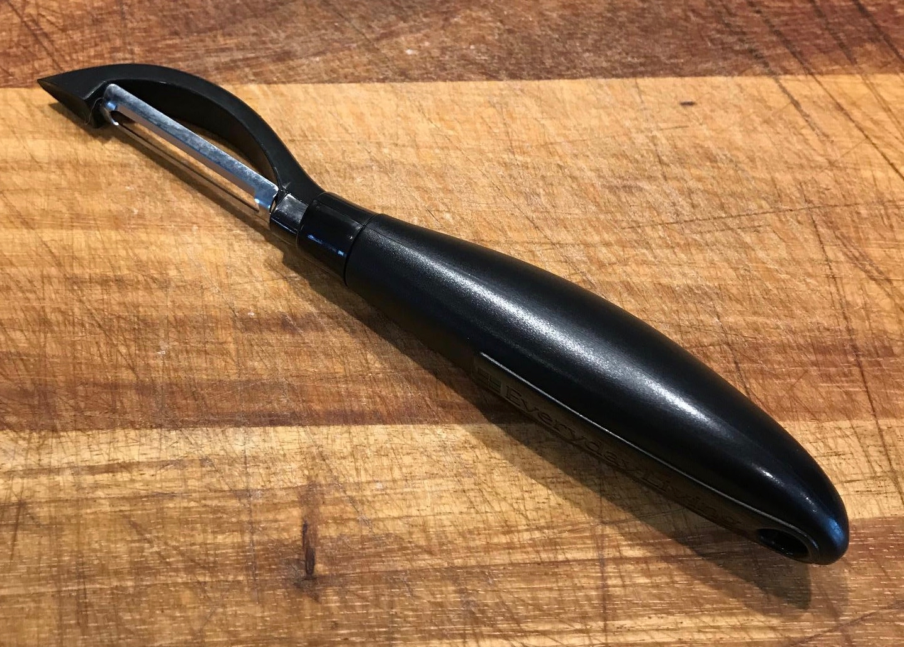
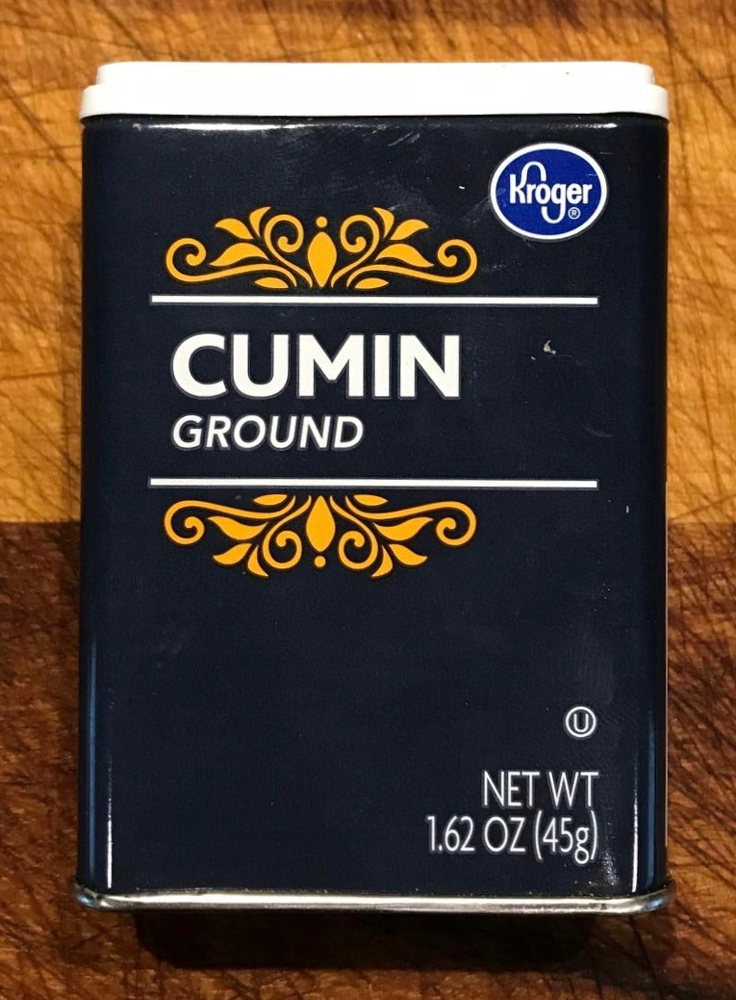
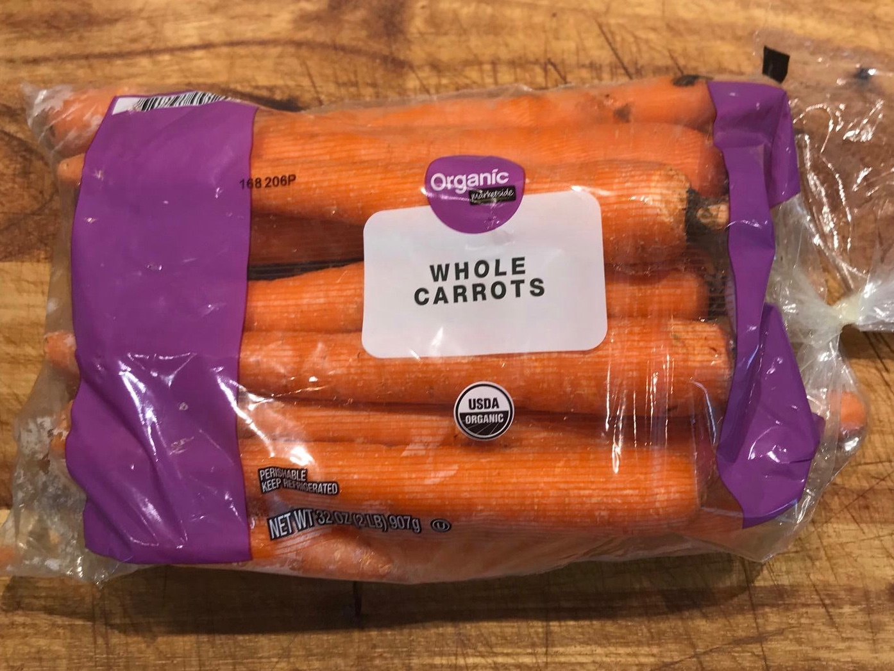
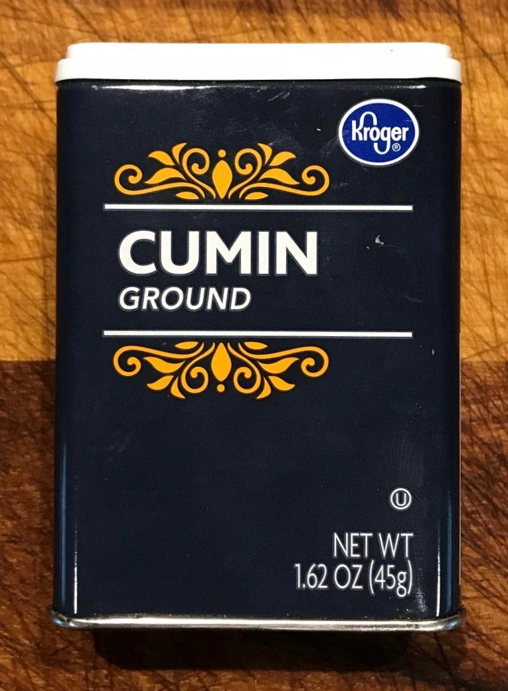
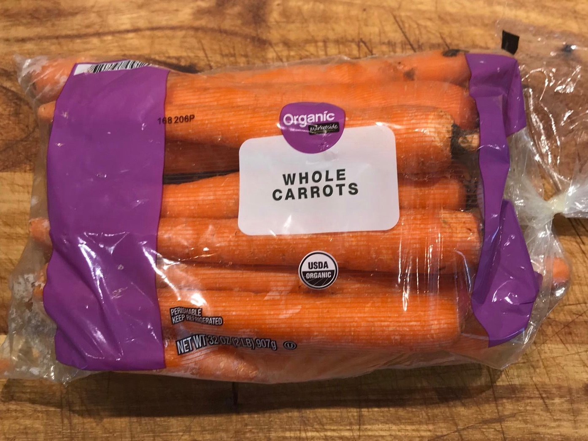

Complete-Meal Lentil Soup
Ingredients
- shallots, 2 OR yellow (sweet) onion, 1
- olive oil, about 4 tbsp
- lentils, 2 cups
- potatoes, 2 medium sized
- cold water, 5 cups
- garlic, 1 clove
- cumin, ½ tsp
- carrots, 2 medium sized
- chicken (any cut), ½ pound
- parsley, to taste
- salt & pepper, to taste
Credit Where Due
From page 366 of Pamela Druckerman's wonderful book
Bringing Up
Bébé.
ISBN-10: 0143122967 | ISBN-13: 978-0143122968
Kitchen Gear
- Large sauce pan with top OR pot with top
- Vegetable peeler

Commentary
- Prepare (peel, wash, etc.) raw shallots/onion, potato, and carrots in advance and set aside
Cook
- Add some olive oil to pan/pot and bring to medium heat
- Finely dice shallots/onion and sauté
- Peel, wash, and medium chop potatoes
- Peel carrots
- To pan/pot, add in order
- Lentils
- Potatoes
- Cold water
- Garlic
- Pepper
- Cumin
- Carrots
- Bring to a boil then cover and simmer over medium heat until potatoes and lentils are soft (about 45 min).
Add water as needed.
- Add salt to taste
- While lentils are cooking, cut chicken into very small pieces and brown in some olive oil
- Add cooked chicken to pot
- Ladle soup into bowls and top with chopped parsley to taste
- Enjoy!

 


